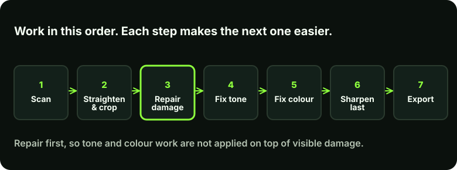

What restoration is, and who this guide is for
A damaged photograph rarely has one problem. A print from a family box may have dust, scratches, a crease, brown spots, fading and a colour cast, all at once. Restoration is not one filter. It is a sequence of small repairs, each aimed at one kind of damage, done in an order that does not make the next one harder.
This guide is for beginners who have a scan of a family photograph and want to repair it carefully. The Photoshop steps are labelled, and the ideas apply to any editor with similar tools. If the photo is irreplaceable or badly damaged, you may prefer to have it restored by a professional.
The order of work

Repairing damage before fixing tone and colour matters because contrast and colour adjustments exaggerate scratches and stains. Sharpening comes last for the same reason: it makes any remaining damage more visible.
Step 1: assess the damage and scan well
Look at the print before you touch it and list what you see: dust, scratches, creases, tears, stains, fading, colour cast, missing corners. Decide what matters most. Not every mark needs removing, and some, such as a natural fold line far from the faces, may be fine to soften rather than erase.
Scan the photo as described in the scanning guide, and keep the unedited scan as your master. Everything below is done on a copy.
Step 2: set up a non-destructive workspace
In Photoshop
Open your copy, then create an empty layer for repairs: Layer > New > Layer (Ctrl+Shift+N), and name it "repairs". If layers are new to you, read the layers and masks guide first. To straighten and crop, use the Crop tool (C) and drag outside the corner to rotate.
Step 3: repair dust, scratches and marks
Zoom in to 100 per cent so you can see the real pixels, and work across the photo in sections. Choose the tool to suit the mark:
- Dust and small spots: the Spot Healing Brush (J). Set the brush slightly larger than the spot and click once.
- Scratches and lines: the Healing Brush, which samples a nearby clean area (Alt-click to choose the source) and blends it in.
- Edges and patterned areas: the Clone Stamp (S), which copies pixels exactly and gives you more control near edges.
In Photoshop
In the Options bar for these tools, set Sample to Current & Below (or All Layers in some versions) and tick the empty "repairs" layer as your target, so the fixes are stored on that layer and not in the original pixels. Work with a small brush, and re-sample often so that you do not repeat an obvious pattern.
In Photoshop
For fine speckle across a flat area such as a sky or backdrop, Filter > Noise > Dust & Scratches can help. Use it on a duplicate layer with a low Radius and Threshold, and mask it so it only affects that area. Applied to a whole face, it will smear detail.
Avoid blurring over a scratch. A blur hides the mark by destroying the detail around it; a good repair replaces only the damaged pixels with matching texture.
Step 4: restore tone
Old prints fade unevenly. Highlights lose brightness and shadows lose depth, so the photo looks flat. The fix is to restore the full range from dark to light.
In Photoshop
Add a Levels or Curves adjustment layer from the half-filled circle icon at the bottom of the Layers panel. In Levels, drag the black and white sliders inward until they meet the start of the histogram's data; then nudge the middle slider for midtones. Use a layer mask to apply the change only where it is needed.
Aim for a natural result. Pushing contrast too far crushes shadows and burns out highlights, and the detail that was still there is lost.
Step 5: correct colour
Colour prints often develop a yellow, magenta or cyan cast as dyes age. Neutralise it before judging skin tones. Use a Curves or Color Balance adjustment layer, and use a part of the picture that should be neutral (a grey wall, a white shirt) as a guide.
For black-and-white photos, check that they are neutral too. Many old prints have a warm or sepia tone that is part of their character; removing it is a choice, not a repair.
Step 6: faces and missing areas
If part of a face is missing, such as in a tear or a stain, there is nothing left to restore, so it has to be rebuilt. This is the most delicate part of restoration. Rebuild conservatively using the lighting, skin tone and structure visible in the rest of the face. A reconstruction that is too confident looks generic and can change how a person appears.
Where AI tools help, and where they mislead
Automatic restoration tools, including the Neural Filters in some versions of Photoshop, can reduce scratches and noise quickly. Availability depends on your Photoshop version and plan, so check what you have.
Check what the tool changed
Some tools generate new detail instead of recovering what was there. On faces this can change eyes, teeth or expression, so the result looks sharp but is no longer the same person. Always compare against your master at 100 per cent, and keep AI output on a separate layer so you can reduce or mask it. See the AI vs manual editing guide.
Step 7: sharpen lightly and export
Only when the repairs are done, sharpen gently. Old photographs should look like well-kept prints, not modern digital images with harsh edges. Then save a layered master (PSD or TIFF) and export a JPEG copy for sharing. See which format to use.
In Photoshop
Save the layered master with File > Save As, then export a copy via File > Export > Export As.
Common mistakes
- Over-smoothing skin. Noise reduction removes grain and fine detail until faces look waxy. See why edits look artificial.
- Colour first, repairs later. Boosting colour makes stains and scratches pop out.
- Cloning obvious repeating patches. Re-sample often and vary your source.
- Editing the only copy. Always keep the original scan untouched.
- Over-restoring. A restoration that erases every sign of age can look fake. Leave natural character.
Limits to be aware of
Restoration cannot bring back information that is not there. A face that is mostly lost can only be reconstructed, not recovered, and a reconstruction is an informed guess. Where this matters, say so when you share the result.
Key takeaways
- Scan well, keep the master, and edit a copy.
- Repair damage first, then tone, then colour, then sharpen last.
- Work on layers so every step can be undone.
- Treat AI output as a suggestion and check it against the original.
- Leave natural character; over-restoring looks artificial.
Want to see a result?
The portfolio includes before-and-after restoration work, and the services page explains how to send a photo for professional restoration.